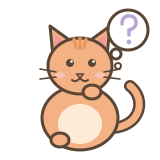

BC Teen Pathways
BC Teen Pathways 👂 Audiologist👂 听力师
Tests hearing and balance, fits hearing technology, and helps people stay connected to sound.测试听力和平衡，验配听力设备，帮人和声音保持连接。

🎧 Listen to this page听这一页
Walk me through this page页面导读
Transcript逐字稿
This is the brief on the audiologist career profile. This page is a guide to understanding
the audiologist profession in BC, hovering what they do, how to get there, and their daily routine.
It's presented simply to let you know this path exists without needing to make any decisions today.
First, the core role. Audiologists test hearing and balance. You know, a common mix-up is thinking
hearing aids are basically just volume knobs, but actually fitting them takes really careful,
personalized programming. The work beautifully blends anatomy, counseling, and the physics of
sound like waves, frequency, and intensity to fit devices like cochlear implant processors for
newborns up to adults. It's regulated by CHCPBC and requires a master's. Applying physics really
makes this a highly technical job. Second, the educational route takes about six years,
a four-year bachelor's, then a master's. University intro physics is a prerequisite.
UBC's master's program admits Canadian citizens and permanent residents only, but it's reassuring
that related bachelor degrees like linguistics or psychology keep doors open for other universities'
programs. Check the official page before you decide. Finally, the job outlook and daily environment.
With a BC median salary of $81,028 and high demand from an aging population, workplaces include
running dizziness balance tests at 13, programming a cochlear implant at 1430, and visiting a school
for sound support at 16 o'clock. Ultimately, this page shows becoming an audiologist offers a visible
results career blending physics, technology, and patient care through a six-year educational route.
Who they work with? Speech-language pathologist, SLP, neuroscientist, OTPT assistant, rehabilitation assistant.
Transcript逐字稿
今天我们要带你平静的梳理一份关于听力师的职业介绍页面
一份非常有意思的资料
没错
我们的任务就是为你提炼这份资料的核心信息
看看这份工作究竟是做什么的
就是没有任何让人信息过载的废话
对
只有最核心的洞察
所以听力师到底是干什么的
我感觉很低人看字面意思
会觉得助听器就像那个
就像收音机的音量旋钮
对
就以为听不清的话直接把声音调大声就行了
对吧
确实
这是个最大的误区
结合这份资料来看的
我们必须纠正一点
艳配绝对不是简单的调大音量
那到底是什么
如果不是调音量的话
资料里明确提到
这其实是极其细致的个性化调试
这里面的物理知识非常关键
比如声音的波频率还有强度
哇
听起来很复杂
所以不光是测测听力
完全不是
他们结合了声学
解剖学
甚至还有心理辅导
他们的目的实际上是帮人和声音保持连接
那我很好奇
听力是每天具体都在忙些什么呢
这个资料里的描述特别有画面感
对
我看着资料里这个典型的一天真的发出感叹
早上九点他们可能在看新生儿
给婴儿做筛查
然后到了下午一点就变成了给严重头晕的人做平衡测试
然后下午试点他们要去学校
去规划课堂里的声音支持
这种服务对象跨度也太大了
是的
从婴儿到老人
那这种多面手在就业市场上应该很吃香吧
非常吃香
资料里给出了确确的数据支撑
因为人口增长还有老龄化的推动现在有着巨大的需求
有多巨大
比如在BC省
2025年到2035年间预计会空缺760个岗位
760个
那真的是个挺大的缺口了
嗯
而且资料上说中位数收入大概是81028加元
听起来待遇不错
那为什么还这么缺人呢
主要因为新毕业生太少了
现在存在很明显的短缺
特别是北部和偏远地区最缺这种人才
也就是说就非常适合那些喜欢物理和技术的人
没错
还有那些有耐心
并且喜欢看到自己的工作能产生明显效果的人
确实
如果能立刻帮别人重新听到声音
效果肯定很直观
如果屏幕前的你被这种能看到明显效果的职业吸引
想要入行的话
那接下来的部分就很重要了
对
语气要稍微严肃一点了
资料里有个特别标注的警告
海外学生特别注意
是的
资料上写着
UBC的听力学理学硕士
目前只招受加拿大公民和永久居民
确实有这个门槛
不过大家也不用太担心
这并不代表这条路就不通了
对
资料里也提供了一些替代方案
没错
你完全可以在BC省
先去读一个相关的本科
比如什么样的本科
比如语言学
或者心理学
生物学都可以
这样能让这扇门保持敞开
把基础打好
对
然后再去规定不同的其他的加拿大
或者美国大学继续深造
所以整体算下来
这条路径大约需要六年时间
四年本科
加上两年UBC这种类似的硕士
差不多
不过我们必须强调资料里的一句原话
做决定前
务必逐一核对官方页面
没错
Check the official page before you decide
政策是会变的
确实如此
今天梳理下来
我觉得听力师并不只是在修理耳朵
他们扮演的角色要深远的多
资料上提到
他们会和言语语言病理师
还有神经科学研究者一起合作
对
他们共同扮演着桥梁的角色
连接着人类和这个充满声音的世界
这确实是一份很有意义的工作
如果您想进一步了解
可以去查看资料中推荐的加拿大言语语言与听力学协会页面
或者去看看那些工作实况的视频
直观感受一下
希望今天的梳理对你有帮助
Lying-down version · about 5 minutes躺着听 · 约 5 分钟
Lying down is fine. Rest counts as study here.躺着听就好。休息也算学习。
Transcript逐字稿
Audiologists test hearing imbalance across all ages, diagnose hearing loss, and teach protection.
The role uniquely combines sound physics with human anatomy.
Second, how do you actually get certified for this?
It takes six years post-high school, meaning a four-year bachelor's and a mandatory two-year master's.
In BC, it's strictly regulated.
Crucially, UBC's master's program admits only Canadian citizens and permanent residents.
You can finish your related bachelor's in linguistics, psychology, or biology, and just apply to other universities.
Finally, is the payoff worth that intense educational barrier?
For sure.
Median BC earnings sit at $81,028, with 760 expected openings by 2035, driven by our aging population.
Your day might mean screening a newborn's hearing at 9 a.m., fitting hearing aids at 10.30, and then running balance tests for dizziness right after lunch.
They work everywhere, from hospitals and clinics to schools and biotech companies, collaborating with speech-language pathologists, neuroscientists, and OTPT assistants.
You can't just jump in.
You absolutely need a four-year bachelor's degree first.
Up in BC, UBC offers a 21- to 36-month master's in audiology.
Wait, the exact same school trains speech-language pathologists?
Yeah, it does, but they're entirely different streams.
To practice, you'll fall under the College of Health and Care Professionals of BC,
so definitely check their official page, since requirements can change.
Finally, there's the surprising importance of physics.
Liking physics is a huge green light for this career, so high school physics and English are super helpful.
Transcript逐字稿
首先,听力师的核心职责可不只是简单的测测听力,
它和同学院的言语语言并理学方向截然不同。
你可能会想,这种医学专业肯定是全靠生物学撑着的吧?
但其实,声音的本质就是波和频率。
你想啊,如果不精通点物理学,根本没法拆解声音的秘密,对吧?
其次,懂物理之所以关键,是因为它能打破大众最大的误解。
很多人以为,助听器不就是个简单的音量旋钮吗?
如果真的只是为了无脑放大声音,那大家随便买个扩音拉拔不就行了?
实际上,这些专家是在根据你的具体情况,精准调试一台复杂的微型电脑。
这绝对是极致的个性化医疗定制。
最后,想跨国申请的留学生必须面对一个冷酷的现实。
目前,UBC的相关硕士项目只招收加拿大公民和永久居民。
不过呢,这绝不代表你就彻底出局了。
通过利用心理学或者语言学等本科专业做跳板,
你依然能保住申请其他美加名校的机会。
只需去官方页面,逐一核对具体规定就行。
你现在什么都不用决定,
只需记住,提前摸清这么结合了物理学与人文关怀的精细科学的门槛,
并规划本科,就是为你未来改变他人的世界,保留了一张超级底牌。
你知道吗,随着人口不断老龄化,
完美融合了升学与心理辅导的听力时,
现在绝对是BC省极圈人才的黄金领域。
那么第一,他们具体做什么?
你需要为各个年龄段的人诊断听力问题,
验配和调试注定剂。
其实啊,如果你平时热爱物理技术,
又特别有耐心去跟人沟通,
那这个岗位真的完美契合你。
第二,咱们看看薪资和前景。
目前新毕业生非常稀缺,
尤其是北部和偏远地区,
那简直太缺人了。
最新数据显示,
这个岗位的收入中位数已经达到了81028甲元,
相当可观。
最后,就是教育路径了。
想成为受监管的听力师,
大概需要六年时间。
高中BDF没法指声,
你得先读四年本科。
这里有个小提示,
高中千万别避开物理哦。
之后还要再攻读高强度的硕士项目,
当然,
做最终决定前,
务必去观望核对家最新要求。
总之,
如果你想追求一份将硬核科技与人文关怀完美结合,
而且需求长期旺盛的稳定职业,
听力师绝对是一条值得投入的专业之路。
听力师可绝对不只是卖助听器的。
其实啊,
这是一个涵盖了从新生儿筛查到平衡测试的全面医疗专业。
咱们直奔主题,
第一,
他们典型的一天跨度极大。
早九点做新生儿听力筛查,
十点半调助听器,
下午做悬晕测试,
甚至还得去学校规划声音系统。
这种硬核的日常,
自然引出了咱们的第二点,
严格的监管与协作。
他们受专业学院严格监管,
而且从不单打独斗,
经常会和言语语言病理师,
也就是咱们常说的SLP紧密搭档。
想深入探索吗?
来看看第三点,
三个超实用的快充资源。
你可以去看WorkBC的视频,
听从业者讲解,
刷一份半短片,
语音体验医院临床,
或者直接去全国协会官网查查职业门槛。
总而言之,
听力学是一个完美结合了精密声学与临床同理性的专业。
无论是解决头晕,
还是优化教室,
听力师都在用专业技术,
实实在在的重塑我们感知世界的方式。
我们来进行一次安静的回顾。
听力师主要负责测试听力与平衡,
艳配听力设备,
帮助人们与声音保持连接。
现在呢,
你什么都不用决定,
只需放轻松,
直到世界上有这样一份工作就足够了。
第一,
听力师会为新生儿、
孩子和成年人测试听力,
找出听力损失与平衡方面的问题。
必须澄清一个很常见的误会,
其实,
助听器绝对不是一个简单的音量旋钮,
艳配并调整助听器和人工耳窝,
是一项极其细致且高度个性化的编程工作。
同时,
这也包含教导人们如何保护听力。
第二,
物理学知识对这个职业显得尤为重要,
因为声音本质上是波,
有着特定的频率和强度。
这份工作其实完美结合了声音的物理学,
人体解剖学,
以及心理咨询。
最后,
这个专业的培训是在不列颠哥伦比亚大学,
也就是UBC进行的。
听力师、
语言与语言并理师同属于一所学院,
仅仅是专业方向不同而已,
而且学历要求为硕士。
在BC,
听力师由健康与咒户专业学院监管,
需要硕士学位。
其实,
听力学家的工作远不止在诊所里测测听力,
他们活跃在从学校到生物科技的各个领域,
是一份将医疗技术与人文关怀完美融合的重要职业。
首先呢,
他们的工作场景真的是极具多样性,
一天下来,
上午可能还在跟进新生儿的听力筛查,
下午就已经在帮患者验配出听器,
或者是赶去学校规划教师的声音支持了,
他们就像是人生的调音师,
在为不同人群定制专属的声音体验。
其次,
这条教育路径非常清晰,
通常需要四年本科,
加上大约两年的硕士,
如果在高中选修了物理和英语,
那将会非常有帮助。
需要说明下,
虽然UBC的硕士项目目前仅招收本地居民,
但这绝对不意味着留学生此路不通。
只要灵活选择其他大学,
机会的大门依然是为你敞开的。
最后,
薪资与未来前景十分可观。
在BC省,
这个职业的中卫年薪超过了八万家元,
十年内七百六十个职位空缺,
当然,
项目要求和薪酬随时可能变动,
做决定之前请务必以官方延绵为准。
总而言之,
无论是追求可观的薪资前景,
还是那份帮人重获声音的成就感,
听力学家都是一个值得你认真规划的绝佳选择。
Made from this page’s checked notes and reviewed before going up. Your place in each episode is remembered in this browser.每集只用本页核过的讲义制作、审听后上线。每集听到哪里会记在本机浏览器里。
Tests hearing and balance, fits hearing technology, and helps people stay connected to sound.测试听力和平衡，验配听力设备，帮人和声音保持连接。
- Audiologists test hearing and balance and fit hearing technology.听力师测听力和平衡，验配听力设备。
- Same UBC school as SLPs, different stream; master's level.和 SLP 同属 UBC 一个学院，方向不同；硕士水平。
- Physics helps: sound is waves, frequency and intensity.物理有帮助：声音就是波、频率和强度。
“Hearing aids are just volume knobs.” Fitting them is careful, personalised programming.「助听器就是音量旋钮」——验配是细致的个性化调试。
🌱 You don't need to decide anything now. This page is just here so you know this job exists.现在什么都不用决定。这一页只是让你知道有这样一份工作。
Important for students from outside Canada海外学生特别注意 UBC's MSc in Speech-Language Pathology and MSc in Audiology admit Canadian citizens and permanent residents only. Students planning to come to BC from abroad should know this before choosing a route. It does not close the field: other Canadian and US universities set their own rules (check each one), and a related bachelor's in BC — linguistics, psychology, biology — keeps the door open.UBC 的言语语言病理理学硕士和听力学理学硕士只招收加拿大公民和永久居民。打算从海外来 BC 读书的学生，在选路线之前就要知道这一点。这并不等于此路不通：加拿大其他大学和美国大学各有规定（逐一核对），在 BC 读一个相关本科——语言学、心理学、生物——也能让这扇门保持开着。 UBC School of Audiology and Speech SciencesUBC 听力与言语科学学院 · 2026-11-15
WorkBC group used: 所用 WorkBC 类别：31112 Audiologists and speech-language pathologists · WorkBC 'Annual Earnings', 2025 Job Bank wage data (combined group)
🔎 What the work is工作是什么
Audiologists test hearing in newborns, children and adults, diagnose hearing loss and balance problems, fit and programme hearing aids and cochlear-implant processors, and teach hearing protection. They combine physics of sound, anatomy and counselling. In BC they are regulated by CHCPBC and need a master's degree.听力师给新生儿、儿童和成人测听力，诊断听力损失和平衡问题，验配并调试助听器和人工耳蜗处理器，并教人保护听力。工作结合了声学、解剖学和心理辅导。在 BC 受 CHCPBC 监管，需要硕士学位。
Outlook (WorkBC): 前景（WorkBC）：Demand driven by growing, aging population; few recent graduates add to shortage; greatest need in north and remote regions.人口增长和老龄化推动需求；新毕业生少加剧短缺；北部和偏远地区最缺人。
You like physics and technology, patient people work, and visible results.适合喜欢物理和技术、愿意耐心与人相处、喜欢看到明显效果的人。
📍 Where people work在哪里工作
Hospitals医院Private clinics私人诊所Community health centres社区卫生中心Schools & school districts学校与学区Biotech & pharmaceutical companies生物技术与制药公司
🛤️ The route in BC在 BC 的路线
flowchart TD A["Grade 11–12: English Studies 12, Physics 11"] A --> P0["4-year bachelor's, any major, with the listed prerequisites"] P0 --> B["UBC School of Audiology and Speech Sciences: MSc Audiology and Speech Sciences, Audiology sub-specializat"] B --> C["About 6 years in total"] C --> R["Register: College of Health and Care Professionals of BC"] R --> J["👂 Audiologist"]
flowchart TD A["11–12 年级：英语 12、物理 11"] A --> P0["4 年本科，专业不限，修够先修课"] P0 --> B["UBC School of Audiology and Speech Sciences：MSc Audiology and Speech Sciences, Audiology sub-specializat"] B --> C["合计约 6 年"] C --> R["注册：College of Health and Care Professionals of BC"] R --> J["👂 听力师"]
| School学校 | Program (official page)项目（官网） | Length学制 | Credential证书 | Checked核对日 |
|---|---|---|---|---|
| UBC School of Audiology and Speech Sciences | MSc Audiology and Speech Sciences, Audiology sub-specialization | 21-36 consecutive months per UBC calendar | MSc | 2026-11-15 |
Program names and lengths are shown in English as they appear on each school's page.项目名称与学制按各校官网英文原样显示。
High-school courses listed列出的高中课
- No direct entry from high school: 4-year bachelor's first. Physics 11/12 and English Studies 12 helpful (university prerequisites include intro physics).
Regulator / professional body监管或专业机构
College of Health and Care Professionals of BC (CHCPBC) source来源 · 2026-11-15
🕘 A day, roughly大致的一天
- 9:00 — Newborn hearing screen follow-up9:00 — 新生儿听力筛查复查
- 10:30 — Fit hearing aids and adjust them with the client listening10:30 — 给服务对象验配助听器，边听边调
- 13:00 — Balance testing for dizziness13:00 — 给头晕的人做平衡测试
- 14:30 — Programme a cochlear-implant processor14:30 — 调试人工耳蜗处理器
- 16:00 — Visit a school to plan classroom sound support16:00 — 去学校规划课堂声音支持
A typical-day sketch we wrote to make the job concrete — real days vary by workplace.这是我们写的典型一天，让工作更具体——实际因单位而异。
🤝 Who they work with和谁一起工作
flowchart LR
me(("👂 Audiologist"))
me ---|communication| r0["🗣️ Speech-language pathologist"]
me ---|works alongside| r1["🔬 Neuroscientist"]
me ---|works alongside| r2["🦾 OT/PT assistant"]flowchart LR
me(("👂 听力师"))
me ---|沟通| r0["🗣️ 言语语言病理师"]
me ---|并肩工作| r1["🔬 神经科学研究者"]
me ---|并肩工作| r2["🦾 OT/PT 助理"]Speech-language pathologist (SLP)言语语言病理师（SLP） · Neuroscientist神经科学研究者 · OT/PT assistant (rehabilitation assistant)OT/PT 助理（康复助理）
🃏 Flip to remember翻卡记一记
What does a Audiologist do, in one sentence?用一句话说听力师做什么？
Tests hearing and balance, fits hearing technology, and helps people stay connected to sound.测试听力和平衡，验配听力设备，帮人和声音保持连接。
How long is the usual route after Grade 12?高中后通常要读多久？
About 6 years: a 4-year bachelor's, then the UBC MSc (about 2 years).约 6 年：4 年本科，再读 UBC 理学硕士（约 2 年）。
The most common mix-up about this job?关于这份工作最常见的误会？
“Hearing aids are just volume knobs.” Fitting them is careful, personalised programming.「助听器就是音量旋钮」——验配是细致的个性化调试。
✅ Quick check小测
⭐ The best references we found我们找到的优质参考
Links open the original sites; every link was checked to exist when this page was built.链接直达原网站；每条都在构建时核过可访问。
🤖 Good questions to ask an AI向 AI 提的好问题
🖨️ Print it打印下来

Curious is enough. You can explore a job without committing to it.感兴趣就够了。可以先了解一份工作，不必马上决定。